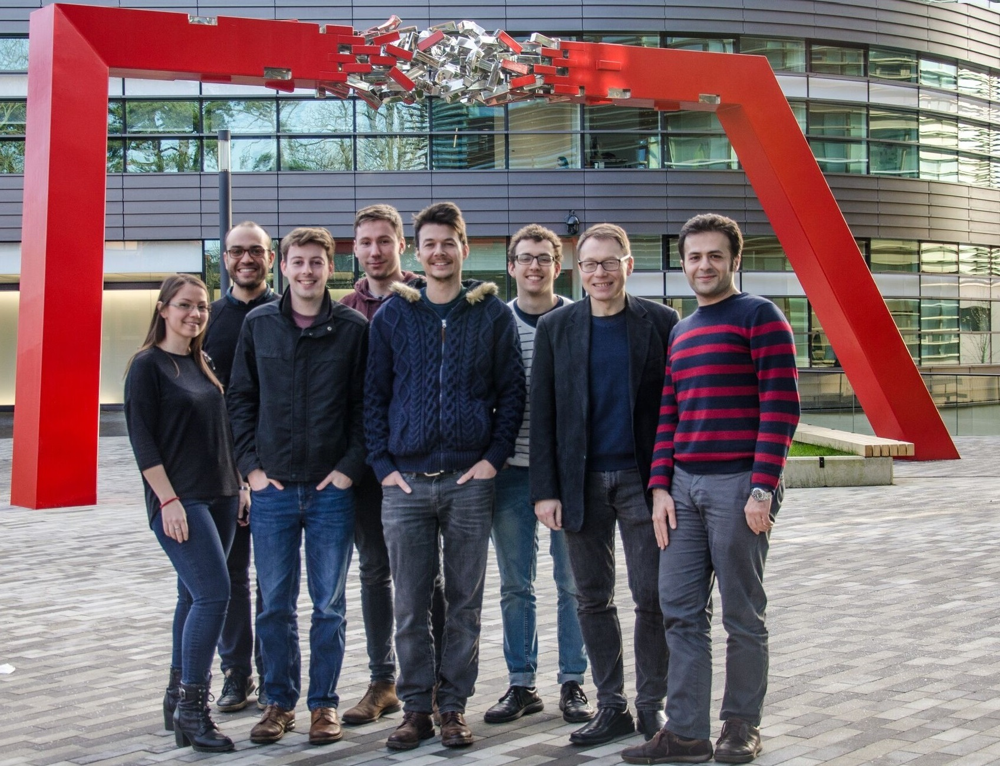

Welcome to the homepage of the NeuroImaging Statistics Oxford (NISOx) research group lead by Professor Thomas Nichols's at the Oxford Big Data Institute.

The NISOx group develops inference methods and tools for large scale, population neuroimaging studies. Current areas of focus are Coordinate-Based and Image-Based Meta-Analysis, Data Sharing, Best Practice and Effective Connectivity.
For a full list of research publications presented by the NISOx group please see the publications page.
News
|
Tweets by ten_photos |